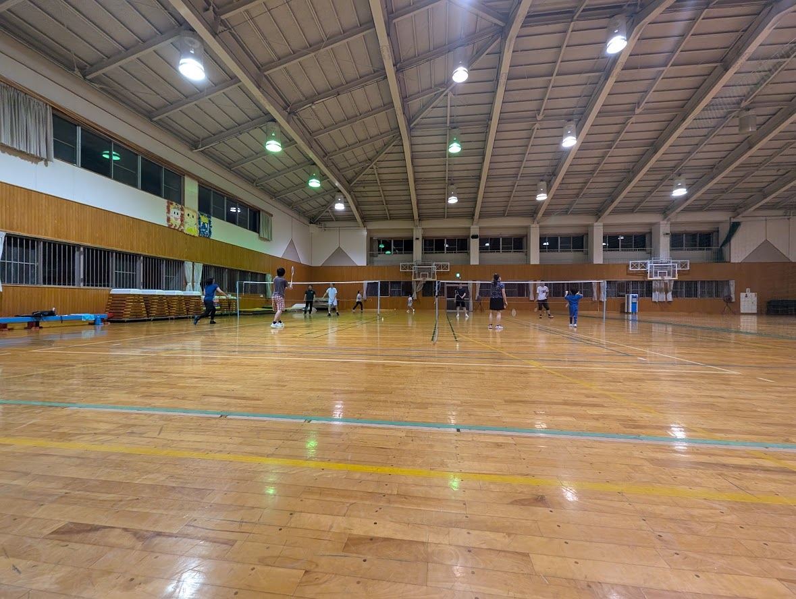

Club / 部
NIG Badminton Club / 遺伝研バドミントン部
Home institute / 所属機関
NIG is the National Institute of Genetics. The official Japanese name is 国立遺伝学研究所. / NIGはNational Institute of Geneticsの略称で、正式な日本語名称は国立遺伝学研究所です。
SOKENDAI activity group / 総研大課外活動団体
The club also serves as the SOKENDAI extracurricular activity group "Genetics Course Badminton Club", composed of students in the Genetics Course, Graduate Institute for Advanced Studies, SOKENDAI. / 遺伝研バドミントン部は、総合研究大学院大学先端学術院遺伝学コースの学生からなる総合研究大学院大学の課外活動団体「遺伝学専攻バドミントン部」も兼ねています。
Purpose / 目的
The club practices badminton to improve skills, support health, and build connections among members. / バドミントンの練習を通じて、技術向上、健康維持、メンバー間の交流を目的に活動しています。
Members / 部員
Member Count / 部員数
Loading... / 読み込み中...
Counts are calculated from Google Group membership. / 部員数はGoogle Groupの登録メンバー数から集計しています。
Practice Scene / 練習風景
Friday Evening Practice / 金曜夜の練習

Officers / 役職者
Yearly Officers Since 2025 / 2025年以降の年度別役職者
| Year / 年度 | Club head / 部長 | Advisor / 顧問教員 | Operations Committee / 運営委員 |
|---|---|---|---|
| 2026 | Amruta Sridhara | Kenji Fukushima / 福島健児 | Noriko Yamatani / 山谷宣子 |
| 2025 | Abdullah Syafiq Edyanto | Kenji Fukushima / 福島健児 | Noriko Yamatani / 山谷宣子 |